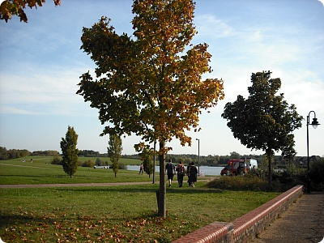
역시 주말에는 쉬어줘야한다 ㅡㅡ;;;
24,25일 주말에 여행하구
월요일날 바로 로동으로 복귀하니
일주일내내 골골거렸음;;; 즈질체력...OTL
토요일 M군이랑 뜬금없이
영국 전통음식 뭐가있냐?
로 이야기가 시작해
Sunday roast 먹으러 가자고 결론(읭?)
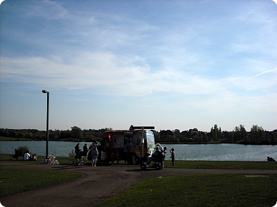
7월8월 여름인데 가을자켓 아직도 입고있네
날씨 안덥네 이러믄서 툴툴거렸는데
주말에 완전 여름날씨 ㅡㅡ;;;;
10월이 시작되는데 갑자기 여름
(그리고 이틀지난 오늘 다시 추워졌........OTL)
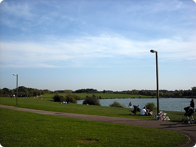
평화롭다아////
Milton Keynes에 있는 Furtzon Lake
전에 갔던 Willen Lake도 그렇구 이지역 사진찍기 정말좋음
경치가 훌륭하다 +_+b
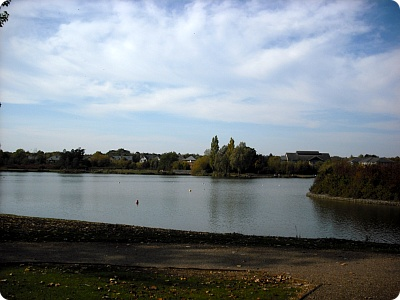
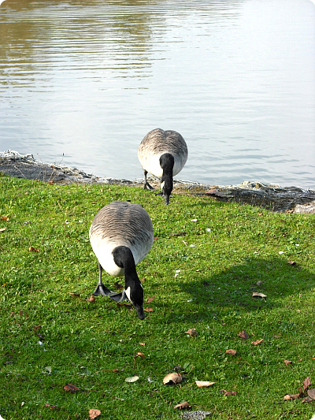
가까이다가가도 쿨하게 무시하고 자기할일한다
사진찍을려고 카메라를 꺼내니까
부시럭거리는소리에 잠깐 쳐다보더니 바로 무시 ㅋㅋㅋ
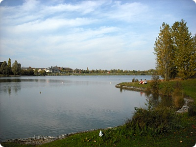
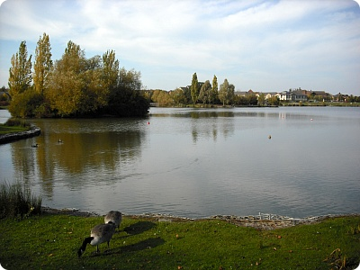
아이스크림먹으면서(이번에도 디저트 먼저...OTL)
앉아서 멍때리다가 시간맞춰서 밥먹으러^^
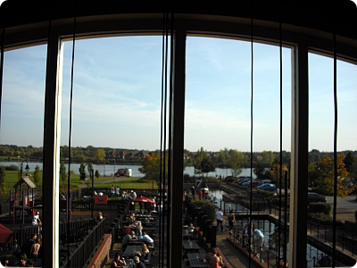
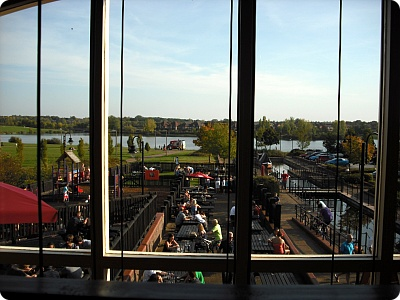
날씨가 좋아서 다들 야외테이블에 앉아서
2층에는 아무도없었당
창가자리앉아서 밖내다보면 바로 호수가보인다
(그리고 바로 옆테이블에 잠시 밥먹으로 올라온 직원이랑
음식기다리믄서 수다떨고^^;;;)
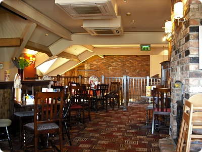
영국 전형적인 펍 분위기
펍푸드는 가끔 생각이 난단말이죠
(참;; 술은 전혀못하믄서 술안주/펍푸드 요런건 참 좋아한다능^^;;)
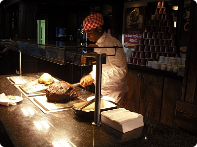
turkey 랑 beef중 선택
그리고 요크셔푸딩도 달라고하는 개수만큼 준다
(앞에 줄서있던 아저씨 요크셔푸딩 4개 얹어가셨음;;;;)
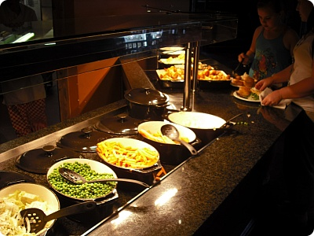
그리고 나머지 야채라던가 소스는 알아서 선택
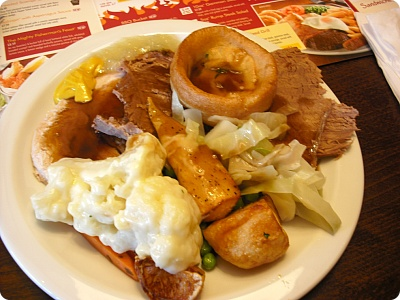
내 접시는 요래요래
미적감각따윈 찾아볼수가 없군욤........OTL
오후타임(4:30pm) 오픈하는 시간맞춰 바로간거라
음식 뜨끈뜨끈한게 오랜만에 먹으니 맛났어요
죠 구석에는 머스타드랑 사과소스
사과소스가 의외(?)로 어울린다능
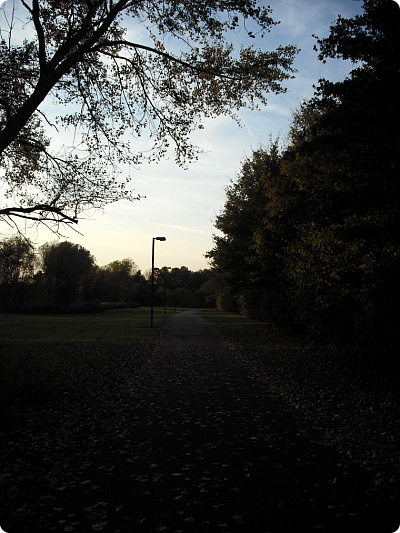
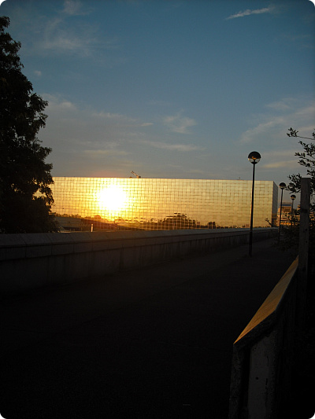
평화로운 토요일
배불리 밥먹구 슬렁슬렁 돌아댕기다가 귀가
(그리고 이게 이날 첫끼;; 커피-아이스크림-선데이로스트 의 훌륭한식단;)
그리고 일요일날
청소하구 슬슬 컴퓨터를 밀어줄때가 되었구나(←;;)
싶어서 리커버리 잘못했다가 일/월/화 격하게 삽질...OTL
겨우 원상복귀 시켜놓은상태 ㅡㅜ
(게다가 인터넷 비번도 잘못알고있어서 다 설치하고
인터넷 연결안된다고 다시 밀고 처음부터 설치하는 바보짓까지......;;;
이래서 사람이 뭐든 어설프게 알면안돼 ;ㅂ;)
fish&chips도 그렇고 sunday roast도 그렇고
엄청맛나거나 그런건 아닌데 가끔 생각난단 말이죠^^
(영국식 차이니즈도 ㅋㅋㅋㅋ)